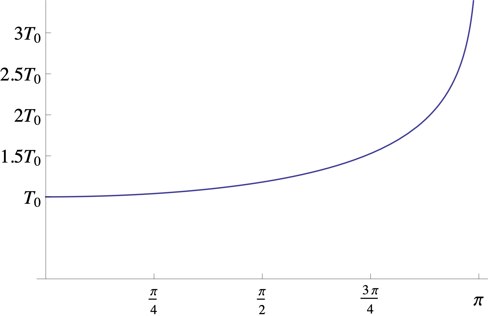

We can now easily derive a formula for the period of oscillation $T$ of the pendulum. Let $t_{\textrm{max}}$ be the time at which the maximal angle $\theta_{\textrm{max}}$ is attained. We have
so $\operatorname{sn}(\sqrt{\lambda} t_{\textrm{max}},k)=1$, or equivalently,
The integral on the right-hand side is known as the complete elliptic integral of the second kind, and denoted by $K(k)$:
which is also sometimes written as
using the substitution $u=\sin \phi$. By symmetry, the period of oscillation of the pendulum is $4t_{\textrm{max}}$ (refer to Figure 5; the time from $0$ to $t_{\textrm{max}}$ represents a passage around one quadrant in the phase plane). So, we have derived the well-known formula
Since $K(0)=\pi/2$, for small values of $\theta_{\textrm{max}}$ we get the approximate formula for small oscillations
Figure 6 illustrates the dependence of the period on the oscillation amplitude $\theta_{\textrm{max}}$.
